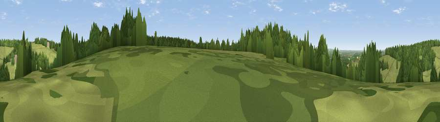

Viewpoint near Ipsden
#42850 in England · top 71% of its area beats it · near Ipsden · access?Where it is
The exact computed spot (SU 65575 84975). Click the marker for map links.
Public access: no public right of way or access land is recorded at this exact spot — it may be on private land. Computed from Natural England's CRoW access layer and OpenStreetMap rights of way — not the legal definitive map. Always verify locally.
The view, rendered

A 360° render of this exact spot computed from the terrain model, tree cover and land cover — summer colours, afternoon light, calibrated against photographs of famous viewpoints. Real trees, hedges and buildings will differ in detail.
The panorama
Grey silhouette: terrain skyline in each direction (720 bearings, Earth curvature and refraction included). Dashed green: skyline with trees (+15 m) and buildings (+8 m) as obstacles. Blue strip: how far the ground is visible on each bearing.
Where the view opens
Wedge length = distance to the farthest visible ground on that bearing (vegetation-aware). Rings at 10, 25 and 50 km.
What fills the view
50% grassland · 34% woodland · 15% cropland · 1% built-up
Angular shares of the visible panorama (visual magnitude), not map area. Landscape diversity 0.46 (0–1 Shannon).
Key numbers
More beautiful places nearby
The staircase of upgrades: each row has a higher view potential than everything closer. Driving times are estimates from straight-line distance, calibrated against real road routing — check an actual route before setting out.
| Place | Direction | Drive | Score |
|---|---|---|---|
| Viewpoint near Ipsden | WSW · 1 km | ~3 min | 40.2 |
| Viewpoint near Nuffield | N · 3 km | ~7 min | 48.4 |
| Viewpoint near Nuffield | N · 4 km | ~9 min | 62.3 |
| Viewpoint near Cookley Green | NNE · 7 km | ~14 min | 64.3 |
| Viewpoint near Cookley Green | NNE · 8 km | ~15 min | 68.5 |
| Viewpoint near Watlington | NNE · 10 km | ~19 min | 70.6 |
| Viewpoint near Lewknor | NNE · 12 km | ~22 min | 70.8 |
| Viewpoint near Lewknor | NNE · 14 km | ~26 min | 74.4 |
51.55985, -1.05546 · source: screening · position refined by local search. Computed location — check access rights before visiting.